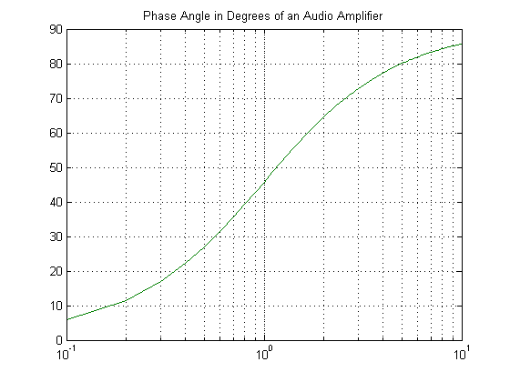

clf
x= 0.1:0.1:10
Phase1= atan(x) + atan(x)*180./pi;
Phase2= atan(x) - atan(-x)*180./pi;
semilogx(x, Phase1, x, Phase2); grid
title('Phase Angle in Degrees of an Audio Amplifier')
x =
Columns 1 through 6
0.1000 0.2000 0.3000 0.4000 0.5000 0.6000
Columns 7 through 12
0.7000 0.8000 0.9000 1.0000 1.1000 1.2000
Columns 13 through 18
1.3000 1.4000 1.5000 1.6000 1.7000 1.8000
Columns 19 through 24
1.9000 2.0000 2.1000 2.2000 2.3000 2.4000
Columns 25 through 30
2.5000 2.6000 2.7000 2.8000 2.9000 3.0000
Columns 31 through 36
3.1000 3.2000 3.3000 3.4000 3.5000 3.6000
Columns 37 through 42
3.7000 3.8000 3.9000 4.0000 4.1000 4.2000
Columns 43 through 48
4.3000 4.4000 4.5000 4.6000 4.7000 4.8000
Columns 49 through 54
4.9000 5.0000 5.1000 5.2000 5.3000 5.4000
Columns 55 through 60
5.5000 5.6000 5.7000 5.8000 5.9000 6.0000
Columns 61 through 66
6.1000 6.2000 6.3000 6.4000 6.5000 6.6000
Columns 67 through 72
6.7000 6.8000 6.9000 7.0000 7.1000 7.2000
Columns 73 through 78
7.3000 7.4000 7.5000 7.6000 7.7000 7.8000
Columns 79 through 84
7.9000 8.0000 8.1000 8.2000 8.3000 8.4000
Columns 85 through 90
8.5000 8.6000 8.7000 8.8000 8.9000 9.0000
Columns 91 through 96
9.1000 9.2000 9.3000 9.4000 9.5000 9.6000
Columns 97 through 100
9.7000 9.8000 9.9000 10.0000
